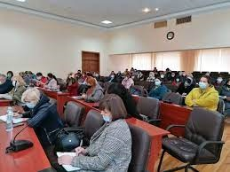
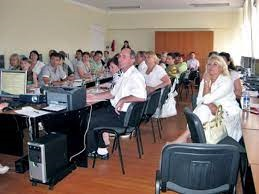
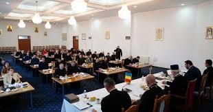

Motelică Boris
|
Profesor
Română, Rusă motelica.boris@gmail.com 068808965 |
La moment activez în calitate de profesor de fizică și informatică în L.T.”Adrian Păunescu”. Stagiu de muncă în calitate de profesor este de peste douăzeci de ani. Dispun de competențe de comunicare și organizaționale bune dobândite prin experiența proprie de profesor, primar și consilier. Din competențele informaționale cunosc aplicațiile Microsoft Office (Word, Excel, PowerPoint, Access) și cele de prelucrare a imaginilor, sunetelor și secvențelor video. Posed cunoștințe referitoare la limbajele de programare C++, C#. Sunt pasionat de proiectarea și construcția echipamentelor electrice pe baza de microcontrolere. |
|  |  |  |
Experiență de lucru
Profesor
Anul 2015 - Prezent
Profesor de fizică și informatică, Liceul Teoretic ”Adrian Păunescu” s. Căzănești raionul Telenești
Profesor de fizică și informatică, gimnaziul ”Pavel Bechet” s. Vadul-Leca raionul Telenești
Primar
Anul 2011 - 2015Primar al comunei Căzănești r-ul Telenești
Profesor
Anul 2002 - 2011
Profesor de fizică și informatică, școala internat din satul Căzănești raionul Telenești
Inginer
Anul 2000 - 2002
Inginer electronica industrială, S.A.”TiparColor” or. Chișinău
Educație
Studii medii
Anul 1984 - 1994
Școala medie Căzănești r-ul Telenești
Studii superioare
Anul 1994 - 1999
Universitatea Tehnică din Moldova
specialitatea: Electronică și comunicații
Recalificare
Anul 2019 - 2021
Universitatea de Stat din Moldova
specialitatea: profesor de fizică și inforamtică